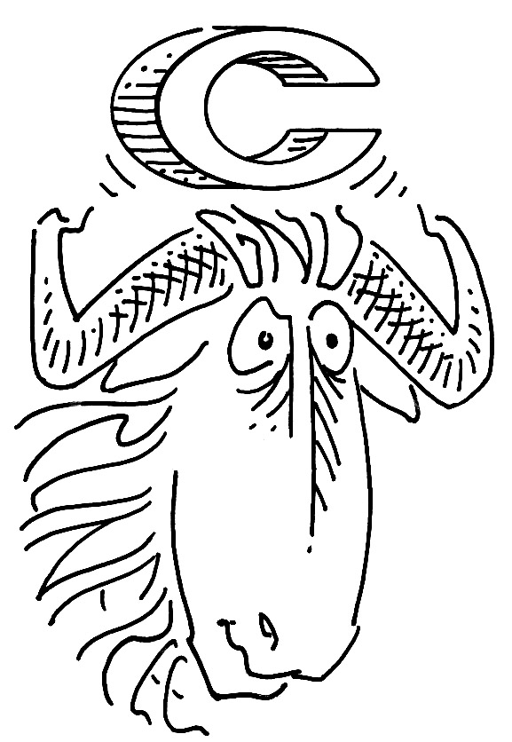

The GNU C Reference Manual
The GNU C Reference Manual is a reference for the C programming language, as implemented by the GNU C Compiler.
This manual is strictly a reference, not a tutorial. Its aim is to cover every linguistic construct in GNU C, but not the library functions (which are documented elsewhere). This manual would probably not make a good introductory book for new programmers, although those who know languages other than C should be able to learn C using it.
The v0.2.2 release of the manual is now available, which includes some significant restructuring of old material, some new material, some new corrections, and, for the first time ever, a Makefile! (Wow!) If you don't feel like building the manual from the Texinfo source, you can also read an HTML version or a PDF version of the manual.
For additional information, please see the manual's project page at Savannah.
Gnu drawing by Duane Bibby; copyright assigned to the Free Software Foundation. Project maintained by Trevis Rothwell.